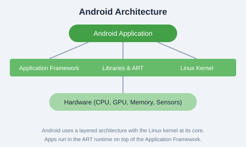

Getting Started with Android Development
What is Android?
Android is an open-source mobile operating system based on the Linux kernel. Developed by Google, it powers billions of devices worldwide  phones, tablets, wearables, TVs, and even cars.
Key Fact: Android has over 3 billion active devices globally, making it the most widely used mobile operating system.
Why Develop for Android?
- Massive User Base: Reach billions of users across 190+ countries.
- Open Ecosystem: Publish on Google Play and alternative app stores.
- Rich Capabilities: Access to hardware (camera, GPS, sensors), notifications, background services.
- Modern Tooling: Android Studio, Kotlin, Jetpack Compose, and comprehensive SDK.
- Monetization Options: In-app purchases, subscriptions, ads, paid apps.
Android Architecture

Android's architecture consists of several layers:
- Linux Kernel: The core OS layer providing drivers, memory management, and security.
- Hardware Abstraction Layer (HAL): Interfaces between hardware and the framework.
- Android Runtime (ART): Runs apps using ahead-of-time (AOT) compilation.
- Native C/C++ Libraries: OpenGL, WebKit, SQLite, etc.
- Application Framework: Java/Kotlin APIs for building apps.
- System Apps: Built-in applications like Phone, Contacts, Browser.
Application Components
- Activities: Single screen with a user interface.
- Services: Background operations without a UI.
- Broadcast Receivers: Respond to system-wide events.
- Content Providers: Share data between apps.
Activity Lifecycle

An Activity goes through several states:
onCreate() Called when the activity is first created.onStart() The activity becomes visible to the user.onResume() The activity starts interacting with the user.onPause() Another activity is in the foreground.onStop() The activity is no longer visible.onDestroy() The activity is destroyed.
Hello World App (Kotlin)
// MainActivity.kt
package com.example.hello
import androidx.appcompat.app.AppCompatActivity
import android.os.Bundle
import android.widget.TextView
import android.widget.Button
class MainActivity : AppCompatActivity() {
override fun onCreate(savedInstanceState: Bundle?) {
super.onCreate(savedInstanceState)
setContentView(R.layout.activity_main)
val greetingText: TextView = findViewById(R.id.greetingText)
val clickMeButton: Button = findViewById(R.id.clickMeButton)
clickMeButton.setOnClickListener {
greetingText.text = "Hello, Android!"
}
}
}<!-- activity_main.xml -->
<?xml version="1.0" encoding="utf-8"?>
<androidx.constraintlayout.widget.ConstraintLayout
xmlns:android="http://schemas.android.com/apk/res/android"
android:layout_width="match_parent"
android:layout_height="match_parent">
<TextView
android:id="@+id/greetingText"
android:layout_width="wrap_content"
android:layout_height="wrap_content"
android:text="Welcome!"
app:layout_constraintCenter="parent" />
<Button
android:id="@+id/clickMeButton"
android:layout_width="wrap_content"
android:layout_height="wrap_content"
android:text="Click Me"
app:layout_constraintBeneath="@id/greetingText" />
</androidx.constraintlayout.widget.ConstraintLayout>
Exercise: Create a new Android project in Android Studio with an Empty Activity. Run it on the emulator, then modify the layout to include two TextViews and a Button that changes the second TextView's text when clicked.